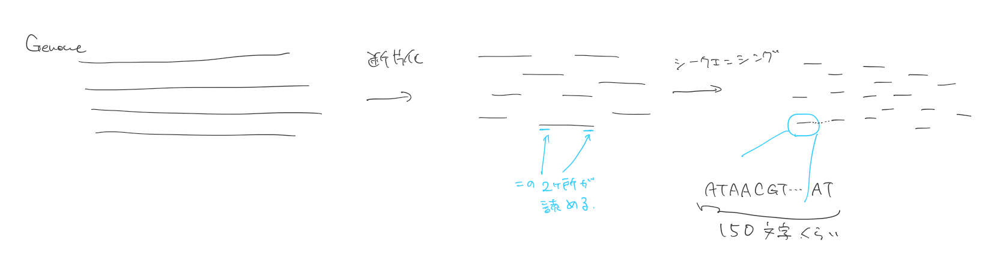
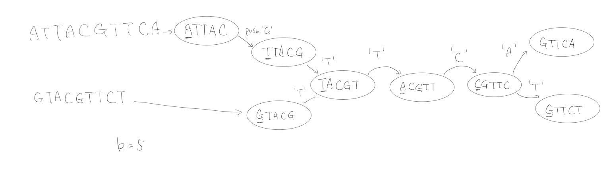

de Brujin Graphについてメモ
2018-09-01書くこと
さてみなさん、我々は今や、ヒトのゲノムをダウンロードできる時代に生きていますが、 このゲノムとやらが、どのように作られて来たかは、かまぼこがどのように作られているか程度にしか知られていない、と思われる。 本日は、みなさんに、バイオインフォマティクスの一分野である、ゲノムアセンブリにおいてよく用いられている、de Brujin Graph（ド・ブロイグラフと日本語で発音する人がいるが、多くの外国語がそうであるように、これもまたオランダ語を流暢に話す人々のみに話せる単語らしい）と言うものについて解説します
もう少し簡単に言うと、こうなるります。あなたはある本Bを持っています。100冊のBをシュレッダーにかけてしまいました。シュレッダーから出てきた断片から、元の本を再構成するには、どうしたらよいでしょう？ どのようなアルゴリズムを考えつくだろうか？ それはどのくらいきちんと動くだろうか？
または、次のような問いかけでもよい：あなたはピカソの絵を大量にコピーし、それをバラバラに切り刻みました。どのように元のピカソの絵を復元できるだろうか？
かなりインフォーマルに書くが、記法と正確性には気をつけようと思っている。
また、文末に参考文献をつけておくので、興味がある人は、自分でサーベイや実装をしてみてほしい。
もちろん、誤植や誤記、私が間違えている場所はありうるので、見つけ次第、Twitterかメールで報告していただけると、嬉しいです。
イントロダクション
さて、前回の記事でも話題にしたが、現行のDNAシークエンサーのうち、広く使われているものには、大別して、『高精度だが、一度に読める量が少ない短鎖型』と、 『誤り率は高いが、長く読める長鎖型』という二つがあることを言った。
今回は、いまだに業界を席巻している前者について書こうと思う。
まず、全ゲノムシークエンシングにおいては、まず、抽出したゲノムDNAを断片化して、両端の150 bp を読むことになる。下手くそな図で書くと、次のようになる。

実際は、対象のゲノムに対して、x30、つまり、全ゲノムを平均して30回読めるだけのショートリード（『読んだ』塩基のことをこのように表現する）が手に入るので、 次のような、ややカオティックな状況になる。
!(pileup)[./pileup.PNG]
このようなデータセットから、どのようにして元のゲノムを復元できるだろうか？ 一見、この問題は非常に簡単に見える。実際、上の画像を見ると、単に、対応する領域にリードを貼り付けていって、被っているところを圧縮すればいいだけに思える。 しかし、この方法は単にできない。と言うのも、貼り付けるべきゲノムこそが、まさに作りたいものであるから、この方法はほとんど論点先取になっている。 （ただ、本当にそうだろうか？ 例えば、ある『推定』ゲノムのようなを考えて、それに対してショートリードが『どのくらいうまく説明されるか』を考えて、 そこから、さらに『良い推定ゲノム』を作っていく、というようなExpectation-Maximization的な手法はありえないのだろうか？ 気になった人は検索して見ることをオススメする。例えば、 genome assembly EM algorithm等）
したがって、我々はまず、もっとも直接的な方法として、次のアプローチを考える。ジグソーパズルを解くときによく用いる手法を流用してみよう。 つまり、全てのピースについて、合うかどうかを見て、それらを細かく繋いでいく、というやり方だ。より具体的な手続きを示すと、
- 全リードの組に対して、合うかどうかを確かめる(Overlap)
- それらの情報を元にして、リード同士の相対位置を決める(Layout)
- 同じ位置のリードの情報を元に、ゲノムを決定する(Consensus)
である。画像にすると、次のような手続きを踏むことになる。
!(olc)[olc.PNG]
この種のアルゴリズムを、業界ではOLCと言うが、（実際はOLC-LC-LCと、何度かLayoutとConsensusをしている気がする）こんな名前はどうでもいい。
問題の定式化
さて、このアルゴリズムを、よりはっきりと表してみよう。まず、Overlapの手続きは、次のようにかける。
- リードの数だけノードを確保したグラフを作る（行列でもリストでもなんでもいい）
- 全リード対(x,y)に対して、
- xの接尾辞 = yの接尾辞 なら、x->yへエッジを引く
- yの接尾辞 = xの接尾辞 なら、y->xへエッジを引く
となる。 この処理によって、我々は、次のようなグラフを手にしている。
!(stringgraph)[./string_graph.PNG]
このとき、解くべき問題はなんだろうか？ このグラフからLayoutを作れ、と言うのは、次のような問題として書き直せる：このグラフのノードを全て、ただ一度だけ通るパスを求めよ。 このようなパスが求まったら、リードをOverlapとある種の整合性（例えば、辺が引かれていないリードはレイアウト後も被らない）を持つように 並べなおすことは簡単である。
また、Consensusは、単に各位置で多数決をとる事と考えることができる。もし、50:50で割れたら、それは要するに、そのローカスがヘテロだったという事として説明できるかもしれない。
困難さ
まず、Overlapには、自明に(\Omega(n^2))かかる。（アラインメントを知っている人は、(O(n^2 l^2),l)はリードの長さ の計算量を課したくなるが、実際には ショートリードの場合、Exact matchingしか取らないようにするので、そこまでの計算量はかからない）
この手続きは、並列化が本当に簡単な部類に入り、コアを増やせば増やすほど高速化ができる。
一方で、Layoutを作れ、という問題は、はるかに難しい。実際、与えられた有向グラフから、ノードを全てただ一回だけ通るパスを求めろ、 と言う問題は、ハミルトンパス問題として知られており、これは、現状、かなり難しい問題と認知されている（問題としては、クラスNPCに属する）。 詳細は参考文献にゆずるが、Layoutの問題を厳密に定式化すると、クラスNPCに属することが示せる。 （わかってる人向け：難しい問題Pがあって、Pを多項式時間でレイアウトの問題に移せるのだが、レイアウトの 問題が多項式時間で解けるとすると、Pも『レイアウトに変換→レイアウトとして解く』ことによって、多項式時間で解ける。 Pが難しいと思われていることを考えると、これは不合理である、等、と言わなければいけないことはわかっている）
したがって、多くのOLCを採用するアセンブラでは、厳密解ではなく、適当なヒューリスティックを用いることが多い。
問題の再定式化
では、アセンブリは本当に難しく、NPCに属する問題を含むものとしてしか定式化できないのだろうか？
ここで、バイオインフォの巨人と言われる、WatermanやPebznerは別の手法をとった：リードを(k)長の部分文字列に切断して、 それら、より細かい断片を考えよう。
これは一見、馬鹿げているように見える。しかし、次のようなデータ構造を考えよう(これをde Brujin Graphという)。 ここで、(\mathbb{N})は自然数を表し、自然数(k)長の文字列(v \in {A,T,G,C}^k)に対して、 (v[1..])は、二文字目から最後まで、(v[..k-1])は最初からk-1文字目までを表す。
$$ k \in \mathbb{N} G = (V,E) V = {A,T,G,C}^k (v,u) \in E \iff v[1..] = u[..k-1] $$
要するに、最後の１文字を削って、新しく１文字足した文字列間には辺を引くと言うデータ構造を考える。例としては次の画像を参考のこと。

これは、かなり遠回りなアプローチだ。第一、なぜ、わざわざリードを短くするのだろうか？
しかし、このように定式化することによって、解くべき問題は、次のように言うことができる：全ての辺を全て、ただ1度だけ通るパスを与えよ。
と言うのも、このようにして作られたグラフにおいては、エラーがなければ、全てゲノムに現れる文字列であり、 辺をたどることによって、ゲノムの部分文字列を拾っていることになるためだ（ノードは何回でも通っていいことを確認しよう）。
さらに、この問題は、いわゆるオイラー閉路問題であり、効率的なアルゴリズムや、オイラー閉路の存在に対する必要十分条件も知られている。 より具体的には、オイラー閉路（全ての辺をただ一度だけ通るような閉路）があることの必要十分条件は、 全ての辺の出次数と入次数が等しいことであり、アルゴリズムは、
- 適当な閉路を作る。この閉路を作るのに用いた辺を削除する。この閉路をCとする。
- 辺をもつノードがある限り
- そのようなノードから、適当に閉路を構築する
- 構築した閉路を、Cに組み込む。
- 閉路を作るのに使った辺を全て削除する
（このアルゴリズムが正しく動くかはそれほど自明ではない。特に、このような閉路は、いつも作れるのだろうか？ 閉路ができずに、どん詰まりに行ってしまうことはないのだろうか？ もちろんうまくいくのだが。）
このアルゴリズムは、各辺を一度しか触らず、しかも一回は触るため、(O(|E|))の計算量を持つ。
したがって、今までNPCの問題を含んでいたゲノムアセンブリの問題は、次のように、単にグラフを一度だけ舐めるだけの問題に帰着された。 普通、kは70くらいに設定されることが多いように思われる。
ドローバック
ところで、そんなにうまい話はない。
多くの場合、de Brujin Graph が出てくると、上記までで終わり、コンピューターサイエンスごっつええ話として処理されるのだが、 現実のアセンブリでは、そんなにうまい話はない。 事実、オイラー閉路と、実際のゲノムは、やや関係はあるものの、ぴったり同じと言うわけではない。何より、オイラー閉路は何通りもあるのだ。
!(multiple_eular)[multiple_eular.PNG]
現状、これらのオイラー閉路のどちらかを選ぶことはできない。一方で、ゲノムは物理的実態として一つしかないので、当然……。
これが実際に起こるケースとして、次のような状況を考えてみよう。ある配列A,B,C,D,Rがあり、
----ARB----CRD---
と並んでいるとしよう（それぞれ1000塩基くらいだとする。-あたりは、なんでもいい）。このとき、de Brujin Graphは次のようになる。

さて、ここからオイラー閉路を作ろうと思うと、A->Rと突入してしまうと、R->Dと出ればいいのか、R->Bと出ればいいのか分からなくなるという、 やや最悪な状況が発生する。これは、このままでは本質的に解けない問題で、一般に、ゲノム中に2回以上繰り返し出てくる、 k長以上の文字列のことを、リピートという。
もちろん、これを解くために、いくつかの手法が開発されている。例えば、あるリードが-ARB-とリピートをまたいでいれば、 この情報を用いることで、この曖昧性を回避することができる。
さらに、最初にも言ったように、現行のillumina リードは、あるDNA鎖の両端を読むことができるため（Paired endというが、名前はどうでもいい）、 この情報を用いることで、例えば、Aを読んだリードのペアにBを読んだリードがあれば、曖昧性を解消できる。
注意しておくが、このようなリピートは、自己複製するDNA配列（転移因子）のせいで、ゲノム中に大量に存在するほか、 全ゲノム重複などでも引き起こされうる。
また、さらに状況を悪くするのが、次のような
---RRRRRRRR.....RRRRR-----
という領域があった場合である。このとき、de Brujin Graph は

と言うような様相を呈する。すでにわかっていると思うが、この状況においては、そもそもオイラー閉路を求めることが問題ではない。 要するに、Rが何回連続しているかを推定し、その回数だけ、ループになっている領域を通ることを許すように緩和させる必要がある。
一方で、この繰り返し回数Rの推定は、たとえば次のような状況を考えれば、相当難しいことがわかるはずだ。
---ARRRRRRR...RRB-----CRRR...RRRD----
さらに、あるショートリードに対して、それが鋳型鎖と相補鎖のどちらから読んでいるか分からないため（書いている私も、もちろん、どちらのことを鋳型鎖と言えばいいか分からない）、 実際は、各連結成分ごとに、二つの閉路を探し出さなければならないが、得られたグラフがそのような性質を持つかはさほど自明ではない。
もっと言うと、リードは数％のエラーを含むため、構築したde Brujin Graph 内には、嘘のノードと嘘のエッジが多数含まれる。 本当のゲノムを手に入れるためには、これらの嘘のノードやエッジを取り去る必要があるが、 注意すべきこととして、真のノード/エッジを取り去ることは、本当に許されない一方、嘘のノードは、 最後にリードを、得られたゲノムに対してアラインメントしてみて、一貫性を見ることでキャッチできるということである。
最後に
このように、一見素晴らしいように思える de Brujin Graph は、実際の応用においては、ある程度の 困難に直面することがわかった（これが、前回言った、アセンブリが断片化する理由である）。 これらの困難を解決するために、アルゴリズム/実験的な進歩はいまだに行われているほか、 長鎖型のシークエンサーによって、古きOLCに基づくアプローチが再興し始めている。
読者の皆様には、ぜひ、ゲノムを用いるときに、この特徴は、ゲノムの本当の特性なのか、それとも、アセンブリという問題の特性なのかということを、 少しでも考えてもらいたいものだ（例えば、ゲノムの中のリピート数は常に過小評価される）。
次回の話
ところで、今回は実装についてあまり触れることができなかった。 理論とアルゴリズムがあれば実装がついてくる、と思っている人が多いが、 実際の問題に取り組むときには、紙とペンに置いては考えていなかった問題が現れる。 例えば、今回のグラフは、実質(\Sigma^n)くらいのノード数になりうるが、 これは勿論、(n=60)のときは、メモリに乗り切らないことが予想される。
ただ、これは、データ構造、アルゴリズム的な工夫、そして何より、数テラ級のオンメモリが使えることになったので、 かなり解消されてきていると感じている。
感想
どうでもいいが、Markdownという形式は、時代を10年単位で逆行している気がしてならない。 HTML5が意味の注釈をつけろとかまびすしく要求したのに対して、 H2,H3といったタグを生成するのは、もはや犯罪と言っていい。
これが終わったら、シークエンスアラインメントの話をするか、 私が個人的に勉強中の集団遺伝学の話でもしようと思う。
参考文献
- Port, E., Sun, F., Martin, D., & Waterman, M. S. (1995). Genomic mapping by end-characterized random clones: a mathematical analysis. Genomics, 26(1), 84–100. https://doi.org/10.1016/0888-7543(95)80086-2 (おそらくはじめにde Brujin Graphと同様の考えを持ち込んだ論文)
- Pevzner, P. A., & Tang, H. (2001). Fragment assembly with double-barreled data. Bioinformatics. https://doi.org/10.1093/bioinformatics/17.suppl_1.S225（オイラー閉路として解く＋リピート解決を持ち込んだ論文）
- Pevzner, P. A., Tang, H., & Waterman, M. S. (2001). An Eulerian path approach to DNA fragment assembly. Proceedings of the National Academy of Sciences. https://doi.org/10.1073/pnas.171285098（上記のサラミ）
- Simpson, J. T., Wong, K., Jackman, S. D., Simpson, J. T., Durbin, R., Salzberg, S. L., … Jones, S. J. M. (2012). ABySS : A parallel assembler for short read sequence data structures ABySS : A parallel assembler for short read sequence data, 1117–1123. https://doi.org/10.1101/gr.089532.108
- Bankevich, A., Nurk, S., Antipov, D., Gurevich, A. A., Dvorkin, M., Kulikov, A. S., … Pevzner, P. A. (2012). SPAdes: A New Genome Assembly Algorithm and Its Applications to Single-Cell Sequencing. Journal of Computational Biology, 19(5), 455–477. https://doi.org/10.1089/cmb.2012.0021（これら2つが割と有名か。他にもVelvet等があるが、流石に紹介しきれない。他のアイディアもたくさん出ているが、ソフトウェアになるまでには行っていない。）